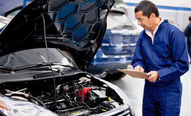

Our Mission
What Sets Us Apart
Our shop caters to the discerning needs of import enthusiants across the driving spectrum. From Sunday cruisers to trackday champions, our shop is equip to handle any challenge.
What you came in for is always 1st, safety issues are 2nd, what will save you money if done with the first 2 is 3rd, maintenance (things that can wait a little while) comes 4th and electives/cosmetics are last. And… We will NEVER sell you what you don’t need.
Our 200-Point Inspection
Safety, emissions, and operation are all delved into deeply. Major areas that get a close look are the braking system, transmission components and operation, and most everything inside the engine compartment. Fluid levels are checked. Individual components are inspected. We look for “evidence of sludge” when it’s reviewing items such as engine belts, hoses, seals, gaskets, and valve covers.
All inspections include cosmetic checks, too including (but is not limited to) front and rear bumpers and fascias, the emblems and nameplates, the moldings and appliqué, door handles, and the running boards and side steps. We includes a check for mismatched paint and correct body-panel alignment. This is in addition to checking for any dents, dings, and scratches.
Inside, we check safety equipment such as seatbelts and airbags as well as basic functions on the dash such as the stereo and heating, ventilation, and air-conditioning systems. There’s also some fairly extensive cleaning that typically takes place. We include cleaning the ashtray and cigarette lighters on their checklists. Toyota, like most automakers, is concerned with smell and makes sure that vehicles are “free of odor, including heavy fragrance.” Also on Toyota’s cleaning list is something more rare: the underhood insulator pad. Mercedes-Benz notes that it verifies operation of features such as its neck-heating Airscarf and its auto-dimming rearview mirror.
Hybrids typically have additional checkpoints such as the condition of the battery and a check of more specialized parts such as electric motors and the anti-theft vehicle-immobilizer system.
DIY
Although we are commited to delivering an unparraled auto buying and repair experience, we also celebrate the initiative of DIY hobbyists. Stop by for one of our workshops to polish your skills. In the meantime, here's ten tips to get you started on your DIY journey.